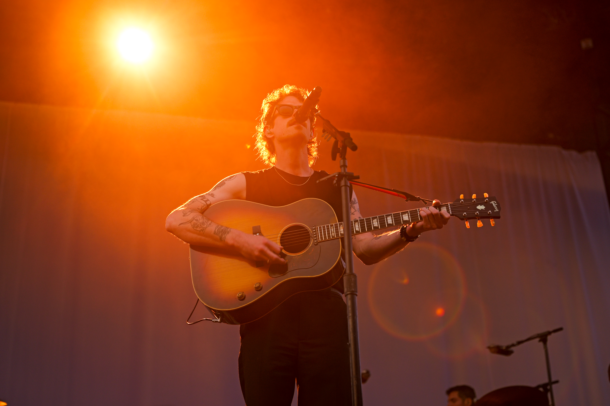

"People carry stories in their faces. Our job is to let those stories breathe."
Urban Portraits was a personal project turned portfolio series — a study in contrast between the raw energy of the city and the quiet intimacy of a well-lit face. Shot across Sydney's inner suburbs, each frame was designed to feel honest without feeling unpolished.
The series was picked up by two editorial clients who saw it circulating on Instagram, leading to commissioned work that continues to define a core part of Centre House's photographic identity.